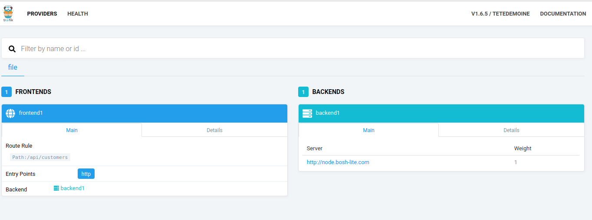
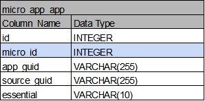

Technical Report
마이크로서비스 스튜디오 설치하기
IaaS 구성 ( Azure )
Bosh 설치하기
CloudFoundry 설치하기
MsXpert 설치하기
MsXpert 운영
Trouble Shooting
References
Database 구조
마이크로서비스 스튜디오 설치
IaaS 구성( Azure )
1-1 . 리소스 그룹 생성
1-2 . Application 등록
Active Directory에서 Application 등록

생성한 Application의 secret 생성
생성한 Application을 Azure Subscription의 Contributer로 권한 부여

생성한 Resource Group에 사용하고자 하는 User를 Contributer로 등록

1-3 . Storage Account 생성
Azure의 Log를 기록하는 곳
컨테이너 생성
테이블 생성

1-4 . 네트워크 구성
NSG(Network Security Group) 구성 8080, 443, 80, 8082, 9088포트는 msxpert에 따로 적용을 위해 등록한 port

CloudFoundry 설치에 필요한 port관련 사항: https://github.com/cloudfoundry/bosh-deployment
가상 네트워크 구성
Address Space
Subnets

Route Table 구성 - route table 생성 후 bosh-net 서브넷 할당

1-5 . vm 생성 (bosh-inception)

Bosh Deploying
2-1 . bosh-cli 설치
# 다운 받은 바이너리 파일을 /usr/local/bin폴더 아래에 위치시키는 것으로 설치 완료
$ wget https://github.com/cloudfoundry/bosh-cli/releases/download/v6.2.1/bosh-cli-6.2.1-linux-amd64
$ chmod +x ./bosh-cli-6.2.1-linux-amd64
$ sudo mv ./bosh-cli-6.2.1-linux-amd64 /usr/local/bin/bosh
2-2 . bosh deploy
# bosh deploy 전 사전 준비 작업
$ sudo apt-get update
$ sudo apt-get install -y build-essential zlibc zlib1g-dev ruby ruby-dev openssl libxslt-dev libxml2-dev libssl-dev libreadline6 libreadline6-dev libyaml-dev libsqlite3-dev sqlite
# bosh-deploy clone
$ git clone https://github.com/cloudfoundry/bosh-deployment.git
# Deploy Bosh 예시 스크립트
#!/bin/bash
$ bosh create-env ~/workspace/bosh/bosh-deployment/bosh.yml \
--state=state.json \
--vars-store=creds.yml \
-o bosh-deployment/azure/cpi.yml \
-o bosh-deployment/uaa.yml \
-o bosh-deployment/jumpbox-user.yml \
-v director_name=bosh \
-v internal_cidr=192.168.0.0/24 \ # Azure에서 bosh용으로 설정한 subnet address-space
-v internal_gw=192.168.0.1 \
-v internal_ip=192.168.0.6 \
-v vnet_name=msxpertfin \ # Azure에서 생성한 Virtual Network
-v subnet_name=bosh-net \ # Azure에서 bosh용으로 설정한 subnet 이름
-v subscription_id=ff38~~~~~~~~~~~~~~~~~~~~~~~~~~ \ # 사용할 Azure subscription ID
-v tenant_id=8be9~~~~~~~~~~~~~~~~~~~~~~~~~~~~~~~~ \ # 사용할 Azure App DirectoryID
-v client_id=383b~~~~~~~~~~~~~~~~~~~~~~~~~~~~~~~~ \ # 사용할 Azure App Client ID
-v client_secret=6hs8i~~~~~~~~~~~~~~~~~~~~~~~~~~~ \ # 사용할 Azure App Secret ID
-v resource_group_name=msxpert_fin \ # Azure resource Group 이름
-v storage_account_name=msxpertfin \ # Azure storage-account 이름
-v default_security_group=msxpert-fin-secure # Azure NSG 이름
2-3. bosh target 설정
# target 설정 및 로그인
#!/bin/bash
# Configure local alias
$ bosh alias-env [지정할 이름] -e [Deploy -- Internal_IP] --ca-cert <(bosh int [Deploy -- creds.yml 파일 경로 ]/creds.yml --path /director_ssl/ca)
# Log in to the Director
$ export BOSH_CLIENT=admin
$ export BOSH_CLIENT_SECRET=`bosh int [Deploy -- creds.yml 파일 경로]/creds.yml --path /admin_password`
# Query the Director for more info
$ echo $BOSH_CLIENT_SECRET
$ bosh -e bosh env
$ bosh -e bosh login
CloudFoundry 설치
3-1. Upload a Cloud-Config
$ bosh -e [target 설정시 지정한 이름] ucc iaas-support/azure/cloud-config.yml
3-2. Runtime-config Upload
3-3. Upload a Stemcell
$ bosh -e bosh upload-stmecell [설치 할 때 사용할 stemcell]
3-4. Deploy CF
#!/bin/bash
$ bosh -e bosh -d cf deploy cf-deployment/cf-deployment.yml \
--vars-store=./env-repo/deployment-vars.yml \
-v system_domain=paastaxxxxx.co.kr \ # 사용할 Domain
-v haproxy_public_network_name=vip \ # 사용할 haproxy_public_network 이름
-v haproxy_public_ip=[xxx.xxx.xxx.xxx] \ # IaaS에서 할당한 Public IP
-o cf-deployment/operations/use-postgres.yml \
-o cf-deployment/operations/azure.yml \
-o cf-deployment/operations/use-haproxy.yml \
-o cf-deployment/operations/use-haproxy-public-network.yml
MsXpert 설치
4-1. angular/cli 설치
$ curl -sL https://deb.nodesource.com/setup_8.x | sudo -E bash -
$ sudo apt-get install -y nodejs
$ npm install -g @angular/cli@1.6.7
# npm install 명령어 실행시 sudo npm install은 권장하지 않음.
# -g: global 옵션으로 설치시 발생하는 permission 문제는 https://docs.npmjs.com/resolving-eacces-permissions-errors-when-installing-packages-globally 참조
# ~/.profile 파일에서 PATH변수에 node_modules 폴더 아래의 @angular/cli/bin 폴더를 등록
# node_modules 폴더의 위치에 따라 적절하게 PATH값 등록
# source ~/.profile 명령을 통해 PATH적용
# 예시 export PATH=$PATH:/home/[linux유저ID]/.npm/node_modules/@angular/cli/bin
4-2. node_module 설치
# git clone 을 통해 MsXpert 프로젝트 다운로드
$ cd microservice/src/crossent/micro/studio/web
$ npm install
4-3. golang 설치(go install go-bindata)
# golang 1.9.7을 다운로드
$ wget https://dl.google.com/go/go1.9.7.linux-amd64.tar.gz
# /usr/local경로 아래에 golang 압축풀기
$ sudo tar -C /usr/local -xzf go1.9.7.linux-amd64.tar.gz
# ~/.profile 에서 PATH 등록하기
# export PATH=$PATH:/usr/local/go/bin
$ vi ~/.profile
$ source ~/.profile
# git clone [MsXpert Studio]
# cd [ project folder ]
$ cd microservice
$ export GOPATH=$PWD
$ export PATH=$PWD/bin:$PATH
$ go install vendor/github.com/jteeuwen/go-bindata/go-bindata
4-4. API 서버 주소 확인
$ vi microservice/src/crossent/micro/studio/web/src/environments/environment.prod.ts
# 예시
# msxpert portal에 할당하기 위해 생성해 놓은 public IP : 101.101.XXX.XXX
# IaaS영역에서 설정해둔 IP와 port번호를 이용하여 apiUrl, swaggerApiUrl 작성
export const environment = {
production: true,
apiUrl: 'http://101.101.XXX.XXX:8080/api/v1',
swaggerApiUrl: 'http://101.101.XXX.XXX:8080/swagger/',
cfEnvNameMSA: 'msa',
cfEnvNamePrivate: 'private',
msServices: 'config-server,registry-server,gateway-server',
sampleApps: 'front,back',
nodeTypeApp: 'App',
nodeTypeService: 'Service',
configService: 'config-server',
registryService: 'registry-server',
configServiceLabel: 'micro-config-server',
registryServiceLabel: 'micro-registry-server'
};
4-5. Web Binary 생성
$ cd microservice/src/crossent/micro/studio
$ make
4-6. Spring-Cloud Application 준비
# https://github.com/startupcloudplatform/Microservices/releases 에서
# - config-0.0.1-SNAPSHOT.jar
# - gateway-0.0.1-SNAPSHOT.jar
# - registry-0.0.1-SNAPSHOT.jar
# 3개의 jar파일을 다운 받아서 각 폴더에 위치시켜야함.
$ cp config-0.0.1-SNAPSHOT.jar microservice/src/crossent/micro/broker/config/assets/configapp
$ cp registry-0.0.1-SNAPSHOT.jar microservice/src/crossent/micro/broker/config/assets/registryapp
$ cp gateway-0.0.1-SNAPSHOT.jar microservice/src/crossent/micro/broker/config/assets/gatewayapp
4-7. Blob 준비
$ cf microservice
$ bosh add-blob golang-linux-amd64-1.8.3.tar.gz golang/golang-linux-amd64-1.8.3.tar.gz
$ bosh add-blob jq-linux64-1.5 jq/jq-linux64-1.5
$ bosh add-blob grafana-5.3.4.linux-x64.tar.gz grafana/grafana-5.3.4.linux-x64.tar.gz
$ bosh add-blob nginx-1.10.3.tar.gz nginx/nginx-1.10.3.tar.gz
$ bosh add-blob binary/pcre-8.42.tar.gz nginx/pcre-8.42.tar.gz
$ bosh add-blob prometheus-2.5.0.linux-amd64.tar.gz prometheus/prometheus-2.5.0.linux-amd64.tar.gz
$ bosh add-blob traefik-1.6.5_linux-amd64.gz traefik/traefik-1.6.5_linux-amd64.gz
4-8. CF org, space 생성
# cf-cli 설치
$ curl -L "https://cli.run.pivotal.io/stable?release=linux64-binary" | tar -zx
$ sudo cp cf /usr/local/bin/
$ cf --version
$ cf create-org org-micro
$ cf create-space space-micro -o org-micro
4-9. UAA Client 등록
# cf-uaac 설치
$ gpg --keyserver hkp://pool.sks-keyservers.net --recv-keys 409B6B1796C275462A1703113804BB82D39DC0E3 7D2BAF1CF37B13E2069D6956105BD0E739499BDB
$ \curl -sSL https://get.rvm.io | bash -s stable
$ source ~/.rvm/scripts/rvm
$ rvm install ruby-2.3.0
$ gem install cf-uaac
# cf-uaac target 설정
## bosh-lite.com 부분은 상황에 맞게 Domain을 넣어줘야함.
$ uaac target https://uaa.bosh-lite.com --skip-ssl-validation
$ uaac token client get admin -s [cf 설치시 생성된 uaa_admin_client_secret]
$ uaac client add micro --name micro -s micro-secret \
--authorities "oauth.login,scim.write,clients.read,scim.userids,password.write,clients.secret,clients.write,uaa.admin,scim.read,doppler.firehose" \
--authorized_grant_types "authorization_code,client_credentials,password,refresh_token" \
--scope "cloud_controller.read,cloud_controller.write,openid,cloud_controller.admin,scim.read,scim.write,doppler.firehose,uaa.user,routing.router_groups.read,uaa.admin,password.write" \
--redirect_uri "https://uaa.bosh-lite.com/login"
4-10. Deploy MsXpert
$ cd microservice
$ bosh -e vbox update-cloud-config cloud-config.yml
$ bosh -e vbox create-release --name msxpert-nipa --force
$ bosh -e vbox upload-release --name msxpert-nipa
$ bosh -e vbox -d msxpert-nipa deploy microservice-msxpert.yml --vars-file vars-file.yml
# vars-file.yml 예시
---
cf_api_url: https://api.[Domain 주소]
uaa_url: https://uaa.[Domain 주소]
cf_username: admin
cf_password: [cf_admin_password]
cf_skip_cert_check: true
external_url: http:[IaaS에서 설정한 studio public IP 및 port번호]
# 문서 4-4에서 apiUrl에 넣어준 IP:port와 동일
haproxy_backend_port: 8089
grafana_admin_password: admin
$ bosh -e vbox -d msxpert-nipa run-errand broker-registrar
< cloud-config.yml 예시 >
azs:
- name: z1
- name: z2
- name: z3
vm_types:
- name: small
cloud_properties:
instance_type: Standard_A1_v2
- name: medium
cloud_properties:
instance_type: Standard_A2_v2
- name: large
cloud_properties:
instance_type: Standard_A4_v2
- name: xlarge
cloud_properties:
instance_type: Standard_D4s_v3
disk_types:
- name: default
disk_size: 3000
- name: small
disk_size: 5000
- name: medium
disk_size: 10000
- name: large
disk_size: 50_000
- name: xlarge
disk_size: 100_000
networks:
- name: default
type: manual
subnets:
- range: 192.168.10.0/24 # 내부망
gateway: 192.168.10.1
azs: [z1, z2, z3]
dns: [8.8.8.8]
reserved: 192.168.10.2-192.168.10.100 # 이미 사용중인 네트워크
# static: ((static_ips))
cloud_properties:
virtual_network_name: msxpertfin # network-toplogy 사진 참고
subnet_name: cf-net # network-toplogy 사진 참고
security_group: msxpert-fin-secure # network-toplogy 사진 참고
- name: vip # cf 배포시 haproxy_public_network_name
type: vip
compilation:
workers: 5
reuse_compilation_vms: true
az: z1
vm_type: medium
network: default
range == cf-subnet --------------------------------------------------------------------------------------------------------------

network-toplogy ---------------------------------------------------------------------------------------------------------------
< microservice-msxpert.yml 예시 >
--- name: msxpert-nipa releases: - name: msxpert-nipa version: latest - name: postgres version: 23 url: https://bosh.io/d/github.com/cloudfoundry/postgres-release?v=23 sha1: 4b5265bfd5f92cf14335a75658658a0db0bca927 - name: haproxy version: 9.3.0 url: https://github.com/cloudfoundry-incubator/haproxy-boshrelease/releases/download/v9.3.0/haproxy-9.3.0.tgz sha1: 384de4ad378b940641a34cda1c63fdc02c901b8f stemcells: - alias: trusty os: ubuntu-trusty version: latest instance_groups: - name: studio-nipa instances: 1 vm_type: small vm_extensions: [] stemcell: trusty azs: [z1] networks: [{name: default}] jobs: - name: studio release: msxpert-nipa properties: bind_ip: 0.0.0.0 bind_port: 8080 external_url: ((external_url)) postgresql: database: &db_name microservice-nipa role: &db_role name: microservice password: dummy-postgres-password cf: api_url: ((cf_api_url)) uaa_url : ((uaa_url)) username: ((cf_username)) password: ((cf_password)) skip_cert_check: ((cf_skip_cert_check)) client_id: micro client_secret: micro-secret - name: microservice-broker release: msxpert-nipa properties: broker: username: admin password: admin port: 3000 cf: api: ((cf_api_url)) username: ((cf_username)) password: ((cf_password)) organization: org-micro space: space-micro skip_cert_check: ((cf_skip_cert_check)) - name: haproxy release: haproxy consumes: http_backend: {from: haproxy_traefik} properties: ha_proxy: backend_port: ((haproxy_backend_port)) - name: nginx release: msxpert-nipa - name: db-nipa instances: 1 vm_type: small stemcell: trusty persistent_disk_type: small #5GB azs: [z1] networks: [{name: default}] jobs: - name: postgres release: postgres properties: databases: port: 5432 databases: - name: *db_name roles: - *db_role - name: broker-registrar-micro instances: 1 azs: [z1] lifecycle: errand vm_type: small stemcell: trusty networks: [{name: default}] jobs: - name: broker-registrar release: msxpert-nipa properties: servicebroker: name: microservicebroker username: admin password: admin cf: api_url: ((cf_api_url)) username: ((cf_username)) password: ((cf_password)) skip_ssl_validation: ((cf_skip_cert_check)) - name: broker-deregistrar-micro instances: 1 azs: [z1] lifecycle: errand vm_type: small stemcell: trusty networks: [{name: default}] jobs: - name: broker-deregistrar release: msxpert-nipa properties: servicebroker: name: microservicebroker cf: api_url: ((cf_api_url)) username: ((cf_username)) password: ((cf_password)) skip_ssl_validation: ((cf_skip_cert_check)) - name: traefik-nipa instances: 1 azs: [z1] stemcell: trusty vm_type: small # persistent_disk_type: small env: bosh: { swap_size: 0 } networks: [{name: default}] jobs: - name: traefik release: msxpert-nipa provides: traefik: {as: haproxy_traefik} properties: traefik: log_level: DEBUG access_logs: { enabled: true } http: { enabled: true, port: ((haproxy_backend_port)) } web: enabled: true basic_auth: username: test password: test1234 file: enabled: true watch: true rules: | [frontends] [frontends.frontend1] backend = "backend1" [frontends.frontend1.routes.test_1] rule = "Path:/api/customers" [backends] [backends.backend1] [backends.backend1.servers.server1] url = "http://node.bosh-lite.com" weight = 1 - name: grafana-nipa azs: [z1] instances: 1 vm_type: small # persistent_disk_type: small stemcell: trusty networks: [{name: default}] jobs: - name: grafana release: msxpert-nipa properties: grafana: auth: proxy: enabled: true header_name: X-MSXPERTAUTH-USER auto_sign_up: true security: admin_user: admin admin_password: ((grafana_admin_password)) stemcell: trusty vm_type: small # persistent_disk_type: small env: bosh: { swap_size: 0 } networks: [{name: default}] update: canaries: 1 max_in_flight: 1 serial: false canary_watch_time: 1000-60000 update_watch_time: 1000-60000< vars-file.yml 예시 >
--- cf_api_url: https://api.bosh-lite.com # [cf api endpoint] uaa_url: https://uaa.bosh-lite.com cf_username: admin cf_password: # [CF_Admin_Password] cf_skip_cert_check: true external_url: # [studio-nipa VM과 연결시킬 Public IP]:8080 haproxy_backend_port: 8089 grafana_admin_password: admin
마이크로서비스 스튜디오 운영
Trouble Shooting
Contents
MsXpert 의 DB에 접근하기
MsXpert 상에서 앱의 Url 주소가 정상적으로 조회되지 않는 경우
API 등록시 RestAPI가 조회되지 않을때 RestAPI 확인 방법
cf에 deploy 되어 있는 application의 env 확인 방법 ( Application 접근 비밀번호 확인법)
Spring-cloud-Eureka 에러
msxpert-nipa의 각 instance에 접근하는 방법
등록된 API가 정상적으로 호출되지 않는 상황에서 대처법
MsXpert의 DB에 접근하기
# bosh Inception에서 아래의 과정을 실행
$ bosh envs
# 예시 결과: url: 10.10.1.10, Alias: bosh_dev
# vm 확인
$ bosh -e bosh_dev vms
# Deployment 'msxpert-nipa'의 'db-nipa' vm에 bosh ssh 명령어를 이용하여 접속
$ bosh -e bosh_dev -d msxpert-nipa ssh db-nipa
# bosh 명령어 사용시 아래와 같은 에러가 발생하면 bosh login 을 실행하여 해결
# refreshing token: Refreshing token: UAA responded with non-successful status code '401' response '{"error":"invalid_token","error_description":"Invalid refresh token expired at Wed Feb 26 07:07:41 UTC 2020"}'
# bosh login을 정상적으로 진행헀음에도 같은 오류가 발생한다면 bosh 명령어 내릴때 auth 정보를 부여
# 예시 $ bosh -e bosh_dev --client [계정] --client-secret [비밀번호] vms
# ssh 접속 이후에는 아래의 명령어를 통해 DB에 접근이 가능
$ sudo -u vcap /var/vcap/packages/postgres-9.6.4/bin/psql microservice-nipa
MsXpert 상에서 앱의 Url 주소가 정상적으로 조회되지 않는경우
backendApp은 보안을 위해서 url이 공개 되지 않는 것이 기본 Setting

# 예시 cf target 명령어를 통해 작업 공간을 설정해둔 상태에서 cf map-route 명령어 실행 # api endpoint: https://api.bosh-lite.com # api version: 2.121.0 # user: test # org: test-org # space: space $ cf map-route crs-front-lkop bosh-lite.com --hostname crs-front-lkop
API 등록시 RestAPI가 조회되지 않을때 RestAPI 확인방법
우선적으로 swagger페이지가 정상 동작하는지 확인

# 브라우저를 통해 http://[ 확인하고 싶은 Application URL ]/swagger-ui.html 접속 후 확인하고 싶은 컨트롤러 클릭 # 사진 예시: http://crs-front-lkop.bosh-lite.com/swagger-ui.html # 이 부분에서 확인되지 않으면 코드를 확인 # 'microservice-nipa' DB의 'micro_app' 테이블 항목에서 해당하는 데이터의 swagger 데이터에 ''(빈 값)을 넣어주어 DB에 정상적인 데이터가 채워지게 함. # 해당 작업 이후에도 문제가 발생한다면 Application 쪽에서 swagger부분 코드를 확인해야함.
cf에 deploy 되어있는 application의 env 확인 방법 ( Application 접근 비밀번호 확인법)
# cf env [ Application 이름 ]
$ cf env configapp508a6971-870b-45a7-a4df-ac94f5d54987
# application의 basic auth 정보를 확인할 수 있음.
# 결과 예시
#Getting env variables for app configapp508a6971-870b-45a7-a4df-ac94f5d54987 in org user3-org / space space as user3...
#OK
System-Provided:
{
"VCAP_APPLICATION": {
"application_id": "e10ad7e7-d401-404e-af77-7547c3ab3ecd",
"application_name": "configapp508a6971-870b-45a7-a4df-ac94f5d54987",
"application_uris": [
"configapp508a6971-870b-45a7-a4df-ac94f5d54987.bosh-lite.com"
],
"application_version": "c2384821-37d1-4c91-913f-3d3a24f34005",
"cf_api": "https://api.bosh-lite.com",
"limits": {
"disk": 1024,
"fds": 16384,
"mem": 1024
},
"name": "configapp508a6971-870b-45a7-a4df-ac94f5d54987",
"space_id": "c5914e3f-8716-46cc-9a54-3c1020bb27dd",
"space_name": "space",
"uris": [
"configapp508a6971-870b-45a7-a4df-ac94f5d54987.bosh-lite.com"
],
"users": null,
"version": "c2384821-37d1-4c91-913f-3d3a24f34005"
}
}
User-Provided:
basic-secret: 76e0a~~~~~~~~~~~~~~~~~~~~~~~~~~~~~
basic-user: 508a6971-870b-45a7-a4df-ac94f5d54987
basic auth 사용 예시1) cf env를 통해 확인한 basic auth 정보를 이용하여 application에 접근 가능
basic auth 사용 예시2)
# curl 명령 사용 # config application refresh $ curl -d {} -u 508a6971-870b-45a7-a4df-ac94f5d54987:76e0a~~~~~~~~~~~~~~~~~~~~~~~~~~~~~ configapp508a6971-870b-45a7-a4df-ac94f5d54987.bosh-lite.com/refresh
Spring-cloud-Eureka 에러
# EMERGENCY! EUREKA MAY BE INCORRECTLY CLAIMING INSTANCES ARE UP WHEN THEY'RE NOT. RENEWALS ARE LESSER THAN THRESHOLD AND HENCE THE INSTANCES ARE NOT BEING EXPIRED JUST TO BE SAFE.
# Renews threshold값이 Renews(last min) 보다 크면 spring-cloud-config 앱이 재시작한 상태에서 spring-cloud-eureka를 재시작하는 과정이 필요

msxpert-nipa의 각 instance 에 접근하는 방법
# msxpert-nipa의 deploy 상황이 아래와 같을때 각 instance에 접근하는 방법
# Deployment 'msxpert-nipa'
# Instance Process State AZ IPs
# db-nipa/cad4df9b-05af-4c61-8aa6-46494b6972e3 running z1 10.10.20.152
# grafana-nipa/6ac55edb-dc2d-4ee4-b7c9-62ac3d2d0f70 running z1 10.10.20.154
# studio-nipa/4d9d4f20-cdb3-4dce-8631-977952110404 running z1 10.10.20.151
# traefik-nipa/2dccbac6-4840-4ad6-bb8a-cf181466ecd7 running z1 10.10.20.153
# 4 vms
첫번째 방법: IaaS에서 생성한 public IP(Floating IP)에 해당 vm 결합
두번째 방법: haproxy사용
# haproxy 설치 $ sudo apt install haproxy # haproxy 설치 확인 $ sudo systemctl status haproxy # haproxy.cfg 수정 $ sudo vi /etc/haproxy/haproxy.cfg ### 수정 예시 ### # frontend studio-trafik # bind *:9088 # option forwardfor # default_backend traefik-back # backend traefik-back # balance roundrobin # server webserver5 10.10.20.153:8080 # option httpchk # haproxy 재시작 $ sudo systemctl restart haproxy # 브라우저를 통해 접속 # haproxy를 동작시킨 vm의 IP가 10.10.0.1이라면 studio-traefik 접근 URL은 10.10.0.1:9088< 접속 화면 >
등록된 API가 정상적으로 호출되지 않는 상황 대처법
< 상황1. API 호출시 에러 >
< 상황2. vm상 확인시 traefik 정상 동작 > 
< 상황3. Traefik 화면에서 web 태그 확인이 안될때 >

< 상황3 비교. Traefik 화면에서 web 태그가 정상적으로 확인 >
#상황 1, 2, 3 이 동시에 확인되는 경우에는 Traefik 이 다시 올라간 경우라고 보고 새로 API를 등록해주는 것으로 해결 가능함. API등록은 API관리나 마이크로서비스 편집에서 시도.
MsXpert Reference
Database 구조
DB 테이블 reference
- 파란색: micro_app의 id
- 빨간색: micro_api의 id
micro_app: MsXpert에서 생성한 마이크로서비스
micro_app_service: 각각의 마이크로서비스에서 사용하고 있는 cf상의 service (config-service, registry-service)

micro_app_app: 각각의 마이크로서비스를 구성하고 있는 cf상의 application

micro_api: MsXpert에 공개되어 있는 API

micro_api_frontend: micro_app과 micro_api의 관계 확인 가능, 마이크로서비스 API 생성시 Update

micro_app_api: 각각의 마이크로서비스에서 사용하고 있는 micro_api

micro_api_rule: traefik서버에서 저장하고 있는 micro_api들의 정보, micro_app_api에 관한 내용도 확인 가능

migration_version: Database-migration 정보, Database Connection 생성시 사용